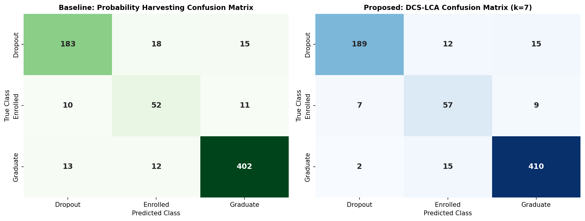
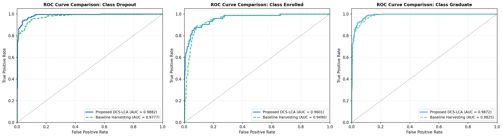
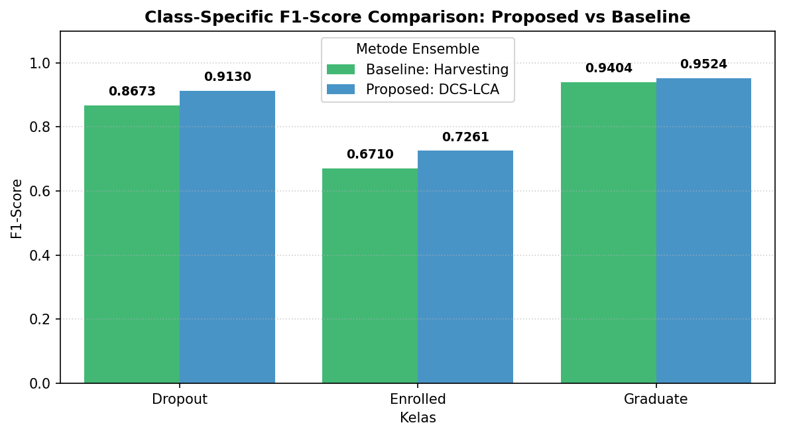
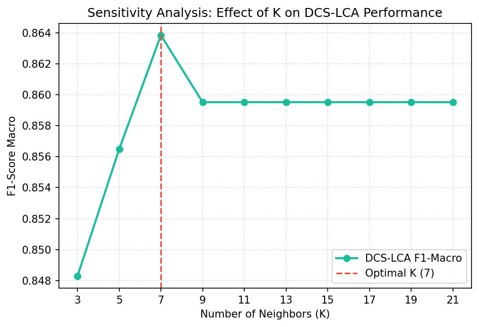

Wins on every metric.
Test set, n = 716, stratified 80/20 split. Probability Harvesting is the baseline; DCS-LCA uses K = 7.
+2.98% vs baseline
−70.08% vs baseline (0.8979)
+8.21% vs baseline (0.6710)
Metric by metric
Light bar: Probability Harvesting baseline. Dark bar: DCS-LCA (K = 7).
DCS-LCA wins on every metric, but the two that matter most are the log-loss collapse (0.898 → 0.269) and the Enrolled-class F1 gain (+8.21%). Enrolled is the smallest, most boundary-ambiguous class, and the one static approaches sacrifice first.
The stitched vector in Probability Harvesting comes from specialists that were never jointly calibrated, so it is often over- or under-confident in overlap zones. DCS-LCA instead inherits the full, self-consistent probability distribution of whichever specialist is locally most competent.
Evidence
Click any plot to enlarge.

Confusion matrices: baseline vs DCS-LCA

ROC curves, one-vs-rest

Per-class F1 comparison

Macro F1 sensitivity to K